Customize Your Desktop
|
|
Desktop settings basics
Workspace settings
Themes & Icon sets
Applying a new Theme
Applying a new Icon set
Changing mouse pointer size
Applying a new mouse theme
Customize your Panel bar
Window Manager Tweaks settings
Linux Lite uses the XFCE desktop environment because it strikes a good balance between resource usage, functionality and customizability for the user. It's relatively light on resources which makes it suitable for installation on older computers, giving them a new lease on life, as well as on newer systems.
Navigating the applications menu and the file system is straightforward, intuitive and is similar to what many people coming from a Windows XP or Windows 7 environment are used to. At the same time, XFCE offers a variety of ways for people to customize the look and feel of their desktop work environment to suit their own tastes if that is what they want to do.
That is what this section of the manual is all about. If you get bored with the default setup, you can change it to your liking in a variety of ways. Linux Lite comes with an assortment of themes and icon sets pre-installed already and switching to one of those is quick and easy. You can also download and apply other themes, icons and mouse pointers to your system if you'd like. The panel along the bottom of your screen that holds the Menu launcher and various indicator icons can be customized in a variety of ways too.
In this section, we'll start off with the more basic ways to customize your desktop and then give examples of additional programs that can be added to your system to spice things up a bit more if you want to.
Some of the most basic changes people like to do are changing the desktop background (wallpaper), deciding whether or not to have certain icons show on the desktop and sometimes they may want to change something about the menu shown when right or middle clicking on the desktop. Desktop Settings is where to look for making those types of changes.
There are two ways to access the Desktop Settings menu. One way is to simply right-click on the desktop and choose Desktop Settings.
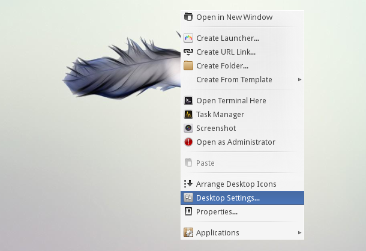
Another way is to choose Desktop from the main Settings Manager window, which can be accessed by going to Menu -> Settings -> Settings Manager.
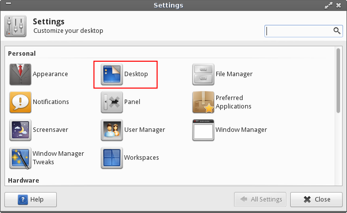
First, we will look at the Background tab under Desktop Settings.
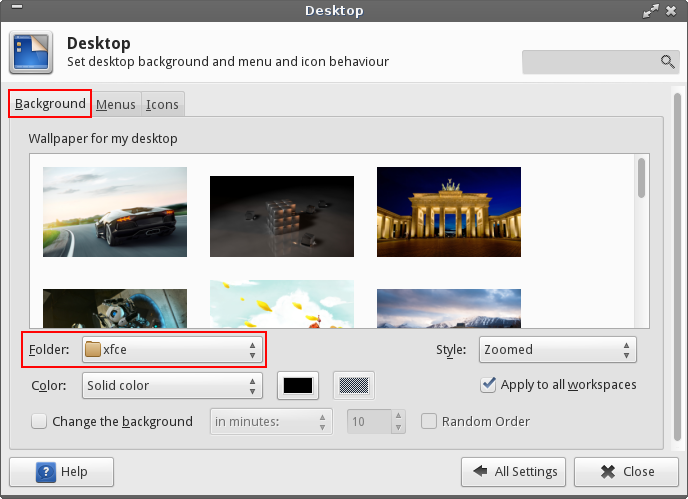
By default, backgrounds are stored in the file system under the
/usr/share/backgrounds/xfce folder. Images in that folder
are shown as choices in the Backgrounds tab. Just
click on the image you want and it will instantly switch to that for
your background. If you want to add some of your own pictures to the
choices, open your file manager As Administrator, enter
your password, then navigate to that folder and paste your image into it.
(HINT: You can just right-click your desktop, choose
Open as Administrator, enter your password and it will
open the Thunar file manager at your Desktop folder. From there, just
navigate to where your picture is stored, copy it, then navigate to
/usr/share/backgrounds/xfce and paste it in.)
If you prefer, you can change the folder location that the
Background tab defaults to for choices. For example, if you have a
folder called "Wallpapers" under your Home folder, you can tell the system
to look there instead. Click the drop-down box next to the word
Folder: and pick Other to navigate your way to
/home/yourname/Wallpapers. Some people prefer doing this
because it eliminates the need to be Administrator when
adding new backgrounds.
There are a few other options associated with the background images. You can choose from different styles to display them in, choose a background color if they do not cover the entire screen, have the backgrounds change after a certain amount of time and whether or not you want to have the same background on each workspace. If you decide to have a different background for each workspace, uncheck the Apply to all workspaces box, pick a wallpaper for the workspace you are on, then drag the window to another workspace and select a new wallpaper for it there.
Now let's take a look at the Menu tab under Desktop Settings.
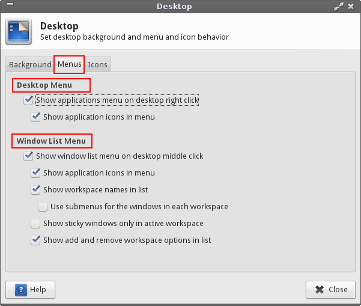
Under Desktop Menu, it is asking if you want an applications menu to show up as a choice when you right-click on the desktop and whether you want that menu to show the icons for the applications listed, or just their names.
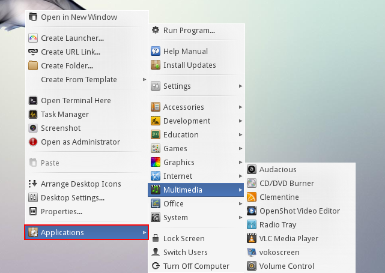
Under Window List Menu, it is asking how you want things to show when you middle-click on the desktop. Here is an example showing how thing are listed using the default settings as shown above while a few program windows are opened on different workspaces.
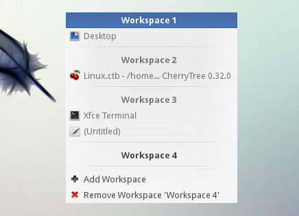
Lastly, under the Icons tab you can change various settings regarding the icons on the desktop -- their size, whether to activate them with a single, or double-click, etc. Under Default Icons you can choose whether or not to show certain default icons on the desktop.
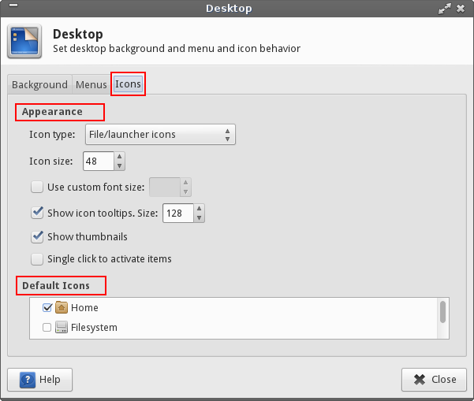
If you are new to Linux, the concept of workspaces may be unfamiliar. Basically workspaces are virtual desktops that you can use to spread your work over. Linux Lite has two workspaces activated by default, but you can change that to any number you like. If you look to the right side of your lower panel you will notice two rectangles. Those are representations of your available workspaces as shown by the Workspaces plugin on the panel.

Workspaces are particularly useful if you tend to have multiple programs open at the same time. For example, if you have two programs running in one workspace and want to open a few more, switching to another workspace gives you a fresh, clean desktop to put them on. This cuts down on desktop clutter and many find it easier to just switch workspaces rather than fumbling through multiple windows on the same desktop to find the one you want. Here are four screenshots that show the difference.
First -- five program windows opened on same workspace.
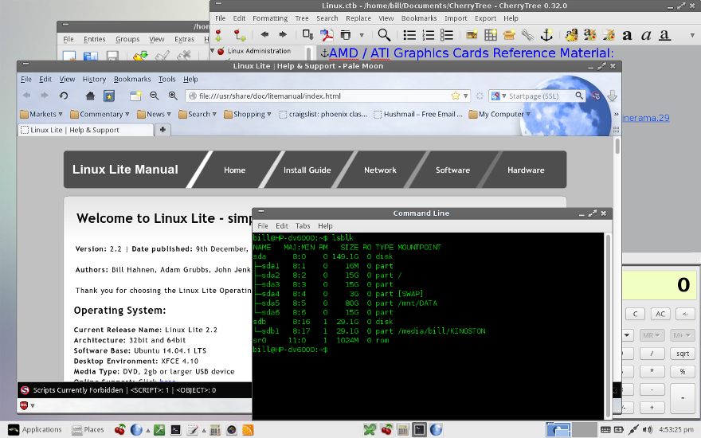
Next -- what you see when you switch to a new workspace.
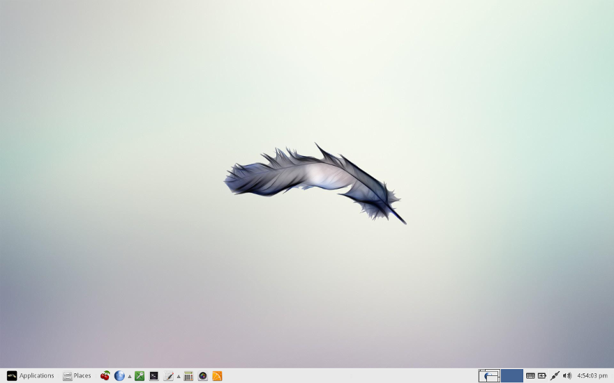
Last -- workspace 1 with some programs on it and workspace 2 with the others.
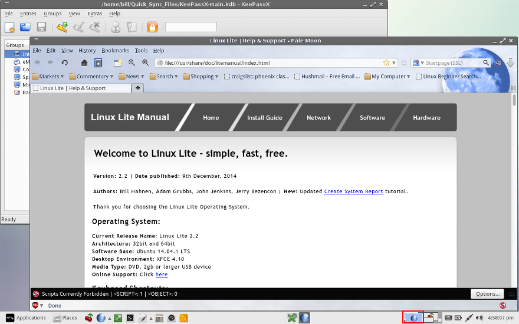
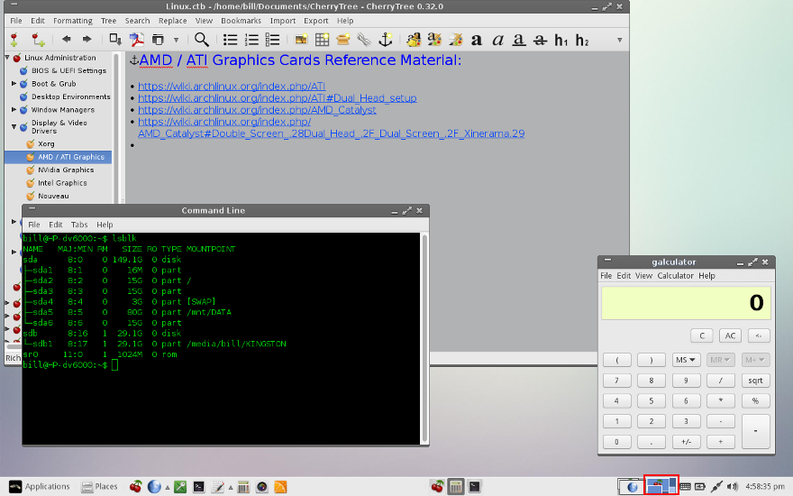
With your work spread out over more than one workspace everything is easier to see. Depending on your settings, switching between workspaces is typically done by either clicking one of the rectangles in the panel, using your mouse wheel while hovering over the rectangles, or using your mouse wheel on an empty spot of the desktop to scroll back and forth between workspaces.
There are three areas where workspace settings can be changed. You can right click the Workspaces plugin on the panel and choose Properties. That brings up the Workspace Switcher window. Some setting are found there and others appear when you subsequently click on Workspace Settings.... In the example below, we will set up four workspaces and have the Workspaces plugin display them in two rows instead of one on the panel.
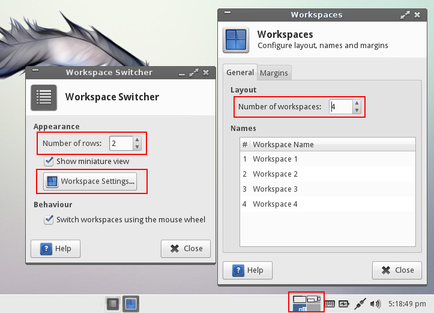
You can also go to the main Settings Manager, choose Workspaces there and that will allow you to change the number of workspaces, their names and margins (if desired).
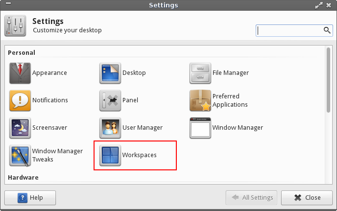
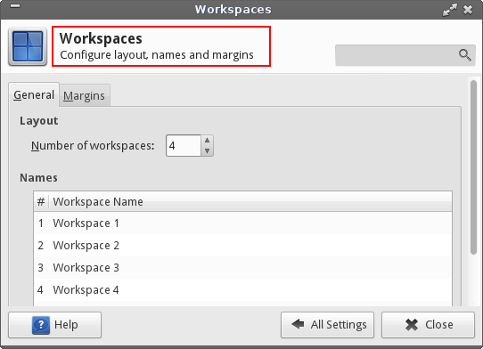
Lastly, there are some more workspace settings within the Window Manager Tweaks section.
The default theme for Linux Lite is Mediterranean White. The
default icon set is Faenza.
There are some additional Theme and Icon sets in Linux Lite. Go to Menu,
Settings, Settings Manager.
There are 2 main areas in the Settings Manager that take care of these settings -
Appearance and Window Manager.

Click on Appearance. Here you will see the Style and Icons tab.


As you click through the various themes and icon sets you will notice visual changes on your computer.
Click All Settings to get back to the main Settings Manager window; then select Window Manager. The Style tab will display available themes that tweak the look of open window frames and the minimize/maximize/close buttons in the windows.
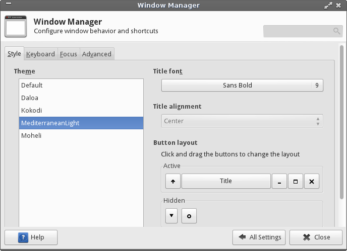
Click through some of the choices to see how things change. Go back to the Appearance settings, pick a new theme, then come back to the Window Manager settings and go through choices again. You may notice that the Window Manager settings look slightly different depending on which Appearance theme you choose. Experiment with different combinations to find one you like.
Close Settings Manager before moving onto the next part of this tutorial.
This next section will show you how to apply new themes and icons.
Head over to the XFCE Look website and choose theme of your liking.
NOTE: Not all themes from there will work as you would expect. Please read all of the documentation before attempting to apply a new theme. Some make installation easy via a PPA, which is a preferable method to the one shown here. Click here for more information on how to install a new PPA. Whichever theme you choose, make sure that it mentions XFCE compatibility.
The first thing we need to do is open up our home folder. Click on View,
Show Hidden Files.
Right-click somewhere in your home folder, Create Folder, make
a folder called .themes (you will only need to do this once).
This is where we will copy the new theme to.
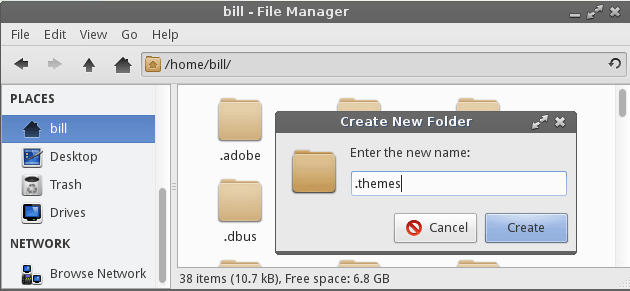
Download a theme of your choosing. In this example we will choose the Redbird theme.
NOTE: Each theme may come with a specific set of install instructions. If they do, please follow those instructions.
Next, extract the theme you just downloaded (right-click, Extract Here).

Copy the Redbird theme folder to the .themes folder in your home folder.

Now go to Menu, Settings, Settings Manager. There are 2 places we need to apply the new theme: Appearance and Window Manager.
First, we'll click into Appearance. Select Redbird from the list.
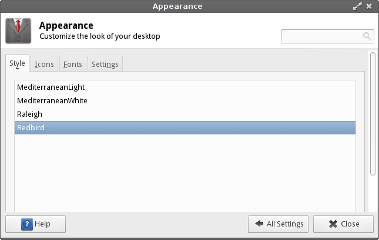
Click on All Settings in the bottom right to go back to the Settings Manager.
Now click into Window Manager and select Redbird. The new theme may not display properly until you log out and back in again, so do that now. Click Menu -> Turn Off Computer -> Log Out. Then log in again. Notice the difference between the before and after log out screenshots below, particularly the coloration shown in the panel.
Before logging out.

After logging back in again.
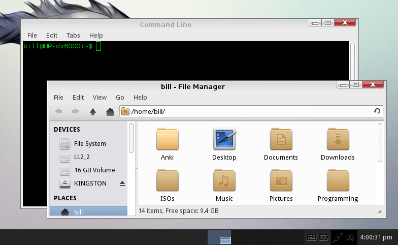
Head over to the Gnome Look website and choose an Icon set of your liking.
NOTE: Not all icon sets from there will work as you would expect. Please read all of the documentation before attempting to apply a new icon set. Some may make installation easy via a PPA, which is a preferable method to the one shown here. Click here for more information on how to install a new PPA.
The first thing we need to do is open up our home folder. Click on
View, Show Hidden Files.
Right-click somewhere in your home folder, Create Folder
, make a folder called .icons (you will only need to do
this once). This is where we will copy the new Icon set to.
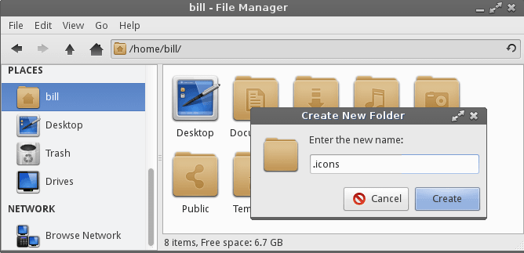
Download an icon set of your choosing. In this example we will choose the Black-Gnome Icon Set.
NOTE: Each icon set may come with a specific set of install instructions. If they do, please follow those instructions.
Next, extract the icon set you just downloaded (right-click, Extract here).

Copy the icon set folder to the .icons folder in your home folder.

Here is a look at our new icon theme.


Go to Menu, Settings, Mouse and Touchpad, click on the
Theme tab.
Select the DMZ theme (black or white, you choose) then adjust
the mouse pointer size to your liking. It will change when you click close.

Head over to the XFCE Look website and choose theme of your liking.
NOTE: Not all themes from there will work as you would expect. Please read all of the documentation before attempting to apply a new theme. Some make installation easy via a PPA, which is a preferable method to the one shown here. Click here for more information on how to install a new PPA. Whichever theme you choose, make sure that it mentions XFCE compatibility.
The first thing we need to do is open up our home folder. Click on View,
Show Hidden Files.
Right-click somewhere in your home folder, Create Folder, make
a folder called .icons if it does not already exist. (You will
only need to do this once). This is where we will copy the new theme to.
Download a mouse theme of your choosing. In this example we will choose the Ecliz mouse theme.
NOTE: Each icon set may come with a specific set of install instructions. If they do, please follow those instructions.
Next, extract the icon set you just downloaded (right-click, Extract here).
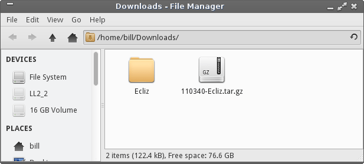
Copy the extracted mouse theme folder to the .icons folder in your home folder. Then open the Settings Manager and open the Mouse and Touchpad settings. Click the Theme tab and you will find your new theme there. Click to select it and your mouse will immediately change. Here is what it looks like.
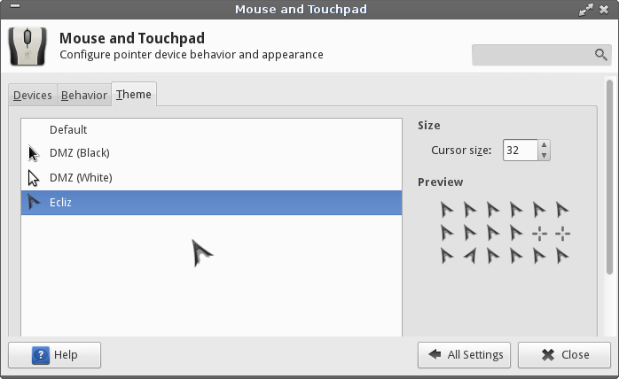
The panel bar along the bottom of your screen, (with your Menu and various indicator icons on it), can be customized in a variety of ways. Its position and size can be changed. Launchers and plugins can be added to it. You can even have multiple panels if you want to position certain items on different parts of the screen. To get started, right-click on an empty area of the panel and select Panel -> Panel Preferences.
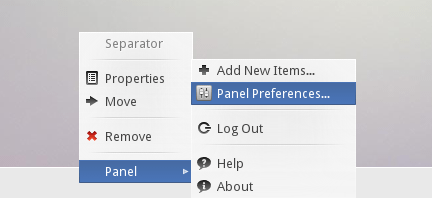
A Panel window will pop up where you can make your changes. The Display tab lets you choose to have the panel displayed horizontally, vertically, or as a deskbar on the screen. You can choose to auto-hide the panel or not, change its length and width and move it to the top, bottom, or either side of the screen.
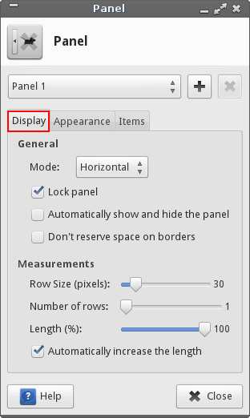
To move the panel you need to first unlock it, then you will see handles appear on either end of the panel that you can grab with your mouse to move it. Here is a close-up showing what the handles look like:
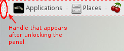
The Appearance tab lets you choose a style for the panel, adjust the transparency (alpha) of the panel, or adjust the opacity of the panel depending on whether your mouse is pointing at it or not. ("Compositing" needs to be enabled in order to change transparency and opacity settings. See the Window Manager Tweaks section for how to do that.)
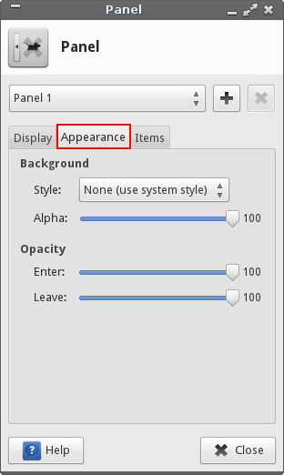
The Items tab is where you go to add things like launchers, plugins and separators to the panel. Items on the panel are listed on the left and the buttons on the right allow you to change their position on the panel (up/down arrows), add (+) or delete (-) items, and edit details for them if necessary. As you do that, you can see the changes take immediate effect on the panel.
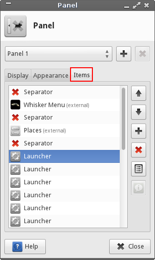
Notice above that I created several launchers by using the + button, which opens an Add New Items window. That window is where you can choose to add launchers, separators, and plugins that are available for the panel.
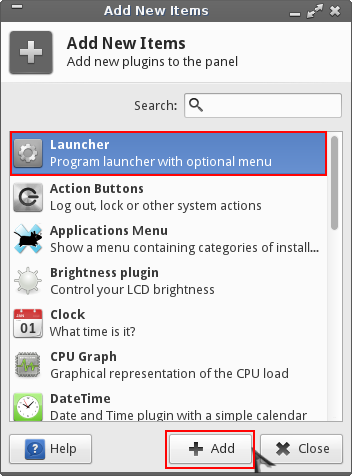
When you are done adding things, close the Add New Items window to get back to the Items tab of the Panel window. To assign a program to a launcher, highlight the launcher item and click the button for "Edit the currently selected item".
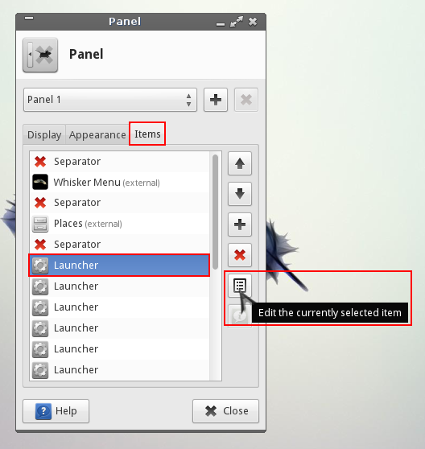
That will bring up the Launcher window.
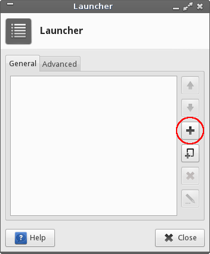
Hit the + button to bring up a list of programs to choose from.
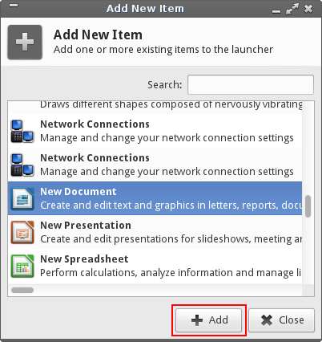
As an example, below is a panel with various changes made to it.
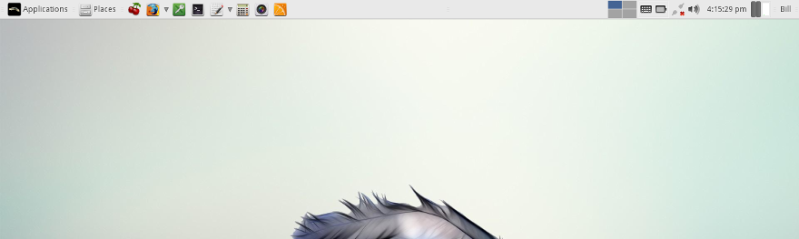
Note the following changes to the panel shown above:
- the panel was moved to the top of the screen
- changed the Menu button to read as "Applications"
- replaced the home folder launcher with a "Places" plugin
- added various other launchers and two launcher menus (note the launchers with an arrow to their right side)
- workspace switcher shows 4 workspaces in a 2-row format
- on far right, a cpugraph plugin and an action button was added

If you are adding, deleting, or changing the positions of several items at once, it is probably easiest to do so from the Items tab under the Panel Preferences window as described above. You can add several things at once from the Add New Items window, then position and edit them from the main Items list.
If you just want to add one item to the panel, you could also just right-click an empty area on the panel and choose Panel -> Add New Items.
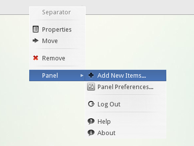
That will bring up the Add New Items window where you can choose an existing plugin to add, or create a new launcher for an application on the panel. As an example, we will add a new launcher to the panel by highlighting it and clicking the Add button.
You will see a new launcher without an assigned icon show up on the far right side of the panel.
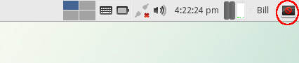
Right-click on it and select Properties.
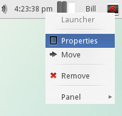
Click the + button to bring up a list of programs to select from.
Find and highlight the one you want, then click the Add button.
The launcher will now display the icon for the program you selected, but it will still be on the far right of the panel. To move it somewhere else, just right-click it and select Move; then just drag it into position with your mouse.
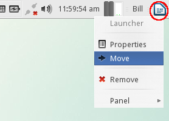
Creating a launcher menu, (giving you a choice to start more than one program from a single launcher), is done in the same manner as just described. The only difference is that you add more than one item to the same launcher. One might prefer to make a launcher menu instead of separate launchers to save space on the panel and/or to group similar types of programs.
In our example, the Firefox web browser has a small arrow to the right of its icon. We have installed two other browsers to the system and added them to the same launcher as Firefox on the panel. Here is what the Launcher window looks like after adding the three browsers. (Note that the one on the top of the list becomes the default choice and is the one whose icon is shown on the panel.)
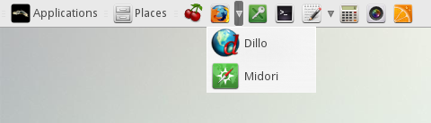
On the panel, if you click the Firefox icon it launches Firefox. If you click the arrow to the right, it shows the other two and you can click either one to launch it.

If you need a more detailed description of the procedure to create a launcher menu, please see this tutorial on our forum. The tutorial also describes some advanced tips like changing the position of the arrow on the launcher.
Creating additional panels is easy to do. From the Panel Preferences window, click the + sign along the top next to the Panel 1 box.
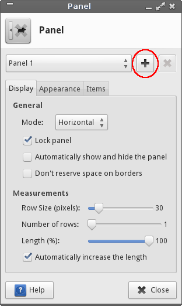
Now you will have a new (empty) panel showing on the desktop and the Panel Preferences window will show Panel 2 along the top. With Panel 2 showing, you can now go about setting your preferences for the new panel under the Display, Appearance and Items tabs. It is unlocked from the start so you can drag and place it where you like on the screen.
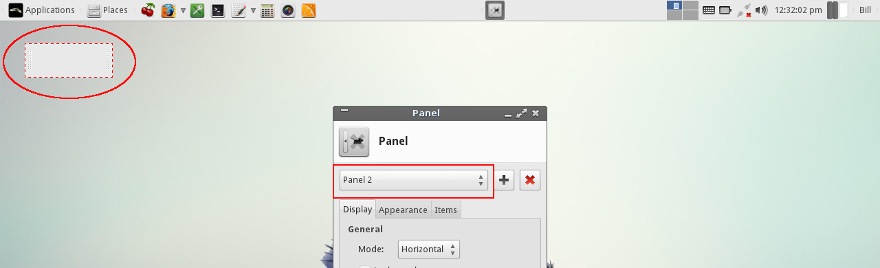
There are many more panel plugins available for installation than those pre-installed with Linux Lite. Have a look on this XFCE site for a comprehensive list of panel plugins that are available in the repositories. They are listed with their real package names, so you can easily use the search function in the Synaptic Package Manager (found at Menu -> System -> Install/Remove Software ) to find and install any that interest you.
Window Manager Tweaks settings
Select Window Manager Tweaks in the main Settings Manager window.
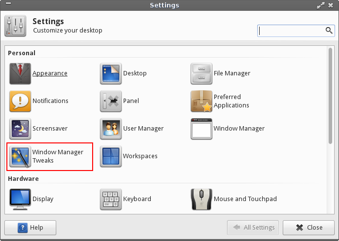
Window Manager Tweaks are an assortment of other settings you can change that effect window behavior. They are organized under the tabs: Cycling, Focus, Accessibility, Workspaces, Placement and Compositor. We will just touch on a few of these settings here. The rest you can browse through at your leisure.
The Compositor tab is of particular importance. It is here that you need to enable compositing if you plan to add transparency or opacity effects to your windows and/or panel(s).
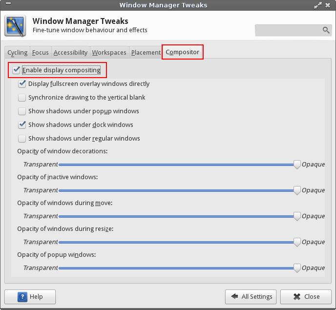
Check the box to Enable display compositing. Now you can access various transparency settings for windows as well as enable some shadow effects. Here is an example showing the opacity of inactive windows changed. Notice that the window in the background is now slightly faded.
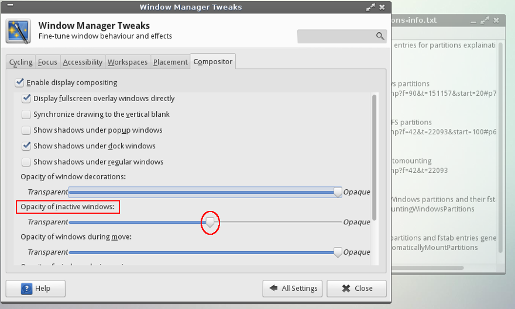
With compositing enabled, you may now make transparency and opacity changes to your panel(s). Go to the Appearance tab under the Panel settings to make those changes. Here is an example showing the panel with full transparency, so icons appear to float on the desktop.
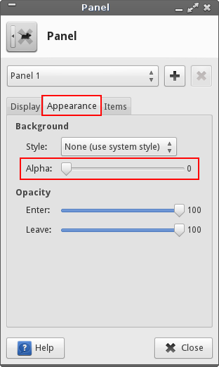

Back on Window Manager Tweaks, click on the Workspaces tab. Here you have a few more settings that control interacting with your workspaces.
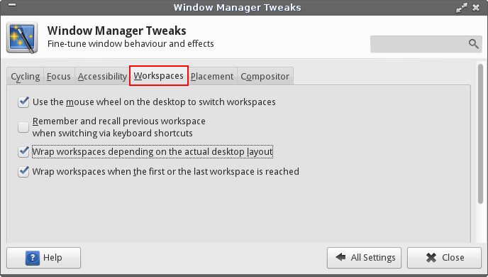
The options are pretty self explanatory. The last two options allow you to use your mouse to drag a window off one of the screen edges on to another workspace.